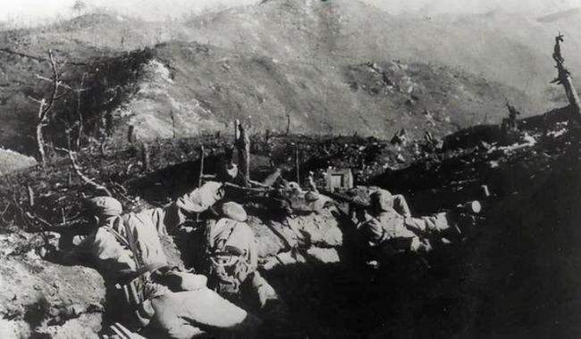

葛岘岭阻击战
在美国和韩国关于朝鲜战争的记述中，曾不约而同地提到一个地名——葛岘岭。

1950年11月28日夜。志愿军已经发起了第二次战役，38军的任务是向军隅里、三所里猛插，切断敌退路， 配合正面的志愿军第39军、40军围歼美军。正是在这种情况下，113师进行了彪炳军史的大穿插，14小时强行 军72.5公里，先敌抢占了三所里，关闭了逃敌退路。读者熟悉的《谁是最可爱的人》，记叙的就是38军在三所 里松骨峰的惨烈阻击战。三所里的战斗刚刚打响，113师侦察分队报告："发现美军有迹象向三所里以西的龙源里 逃窜，龙源里有可能成为美军的又一条逃路。"不迅速守住龙源里，敌人的逃路还是切不断。113师师长下达了死 命令："命令担任第二梯队的337团，拼死也要赶到龙源里，死死守住龙源里！"军情紧急，337团立即猛扑龙源里。 担任左前卫的1营1连将尖刀排的重任交给了2排，排长郭忠田。

11月29日凌晨，郭忠田的尖刀排终于插到了联合国军的心脏--龙源里。这时美军还没有退下来，战场一片肃静。 郭忠田登上葛岘岭主峰，审察着战场地形。郭忠田深思了好一会儿，一开口便斩钉截铁的说："把敌人的坦克统统放 过去，谁也不准开枪！"坦克过完了，紧接着，美军的运兵车、弹药车、炮车组成的车队接踵而至，头尾相连，一眼 望不到边。"打"郭忠田一声令下，全排一起开火前边的几辆车被立即打着了火，两辆弹药车被引爆，后续车队被前面 爆炸的车辆挡住了。美军的反扑很迅速，已经开过阻击线的坦克被爆炸声和火光惊醒，3辆坦克回过头来反攻。"打掉 他"郭忠田命令刚下，张祥忠一枪将敌指挥官击毙。美军向2排阵地包抄过来，当近至手榴弹投掷距离时，郭忠田吹响 了喇叭，手榴弹把美军炸的抱头鼠窜。美军再次组织冲锋，又被2排的机枪打了下去。30分钟后，美军占领了2排对面 的高山，向2排猛烈射击，50多辆坦克回过头来倾泻弹药，天上的飞机再次飞临轰炸。飞机进行了第三次大轰炸，对着 假阵地足足炸了一个小时。这次敌人是背水一战，倒下一批又冲上一批，表现出少有的顽强。2排战士奋勇还击，敌人一 排排的倒在阵地前，5点多敌人的攻势开始减弱，后撤的车队始终未能跨过节排阵地。天黑以后志愿军大部队对敌人进行 了合围。打扫战场时，2排阵地前面共发现215具美军尸体（击伤和尸体被美军拖回者不算）郭忠田集合全排，向连长报 告："全排一个不少，除了5班长的耳朵被震的听不清声音，全排没有一个伤亡。"战后，志愿军总部授予2排"郭忠田英雄 排"的光荣称号，并给郭忠田记特等功，授予"特等功臣""一级战斗英雄"称号。